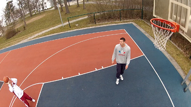

FIND YOUR FIT
There are many possibilities for a career path from retail on to the corporate level.
There are key elements of success, however there is no single best formula for advancement.
Level 1
Retail Professional &
Advanced Retail Professional
- right arrow on next content
CAREER-STEP
RETAIL TO CORPORATE
-
PATH 1:
Customer Service Representative to Wholesale Sales Representative
 What’s true in hoops is true in Peter’s career! -
About Customer Service
Our goal is to provide the highest level of customer satisfaction through an open dialog between the customer and our sales force. Team members have strong interpersonal and communications skills via telephone, in writing, and in person, along with a solid understanding of customer service systems. We work in a very dynamic environment where flexibility is a key trait for success.
-
Customer Service Representative
Proactively develop relationships with customers by accurately responding to inquiries, tracking order issues, and handling complaints. QUALIFICATIONS: University Degree or Technical/Associates Degree, two years customer service experience, preferably handling retail accounts. Fluent written and spoken English. There may also be local language requirements. Preferably strong knowledge of SAP.
-
About Wholesale Sales
The wholesale sales organization brings new products to millions of consumers through retail clients. Our goal is to increase market share and provide consumers with relevant products. The sales organization consists of field sales, direct sales, specialty sales, and team sales. The field sales group sells to retailers of all sizes. The direct sales group serves accounts of certain revenue levels. The specialty sales group sells to specialty shops. The team sales group sells to organizations such as universities. Successful sales professionals are passionate and competitive. Qualifications include presentation, communication, and negotiation skills.
-
Field Account Representative
Work in a defined geographic territory, selling the appropriate products to small and medium accounts. Make sales presentations, write orders, and ensure account relationship growth through support and service. QUALIFICATIONS: University degree in Business Administration with an emphasis on marketing or sales or comparable education; commercial apprenticeship in retail or equivalent education; two years of sales experience; and sporting goods or fast moving consumer goods experience.
-
PATH 2:
Transition to an internship to a functional trainee to landing a job
See how Yulia and Carlos went from interns to landing careers in Global Retail. -
About Internships
You will apply both your university degree and your retail store experience. You will gain hands- on brand experience in your dream job. If you love sports, fitness, or fashion and are ready to take responsibility for your own projects, you will love our internship opportunities. Along with your degree, practical corporate experience is very important for your next position with the adidas Group.
-
Internship Positions, Intern (3-6 months)
Expand your skills and identify your strengths by working on specific projects within different departments in the organization while gaining valuable experience and insight into the sporting goods industry. QUALIFICATIONS: University student, international experience, passion for sport and/or an interest in the sporting goods industry, customer-focused orientation, excellent communication and English skills.
-
About Functional Trainees
In the Functional Trainee Program, our top priority is to provide trainee development. Trainees are supported by a mentor, the department manager, and the HR department. Your individual roadmap is the result of a collaborative effort, based on your skills and interests. As a Functional Trainee, you will change departments every three months, work in multinational teams, and develop detailed category knowledge, as well as a wide contact network. Trainees are also assigned a group project: the Action Learning Project. Here they practice and develop teamwork skills. If your performance during the program is exceptional, we will be delighted to help you secure a challenging entry-level position.
-
Functional Trainee Position
Rotate through different departments, working both independently and as part of a team, on specific projects. Develop your skills and decide what path you want to take in your career. QUALIFICATIONS: University student, international experience, passion for sport and/or an interest in the sporting goods industry, customer-focused orientation, excellent communication and English skills. Specific requirements are found in the respective position openings.
Level 2
Stepping Into Management
(Assistant Store Manager)
- right arrow on next content
CAREER-STEP
RETAIL TO CORPORATE
-
PATH 1:
Transition to Retail Merchandising
See how Antonio & Raluca delight the consumer. -
About Visual Merchandising
Retail Merchandising determines which products should be placed in our stores for each category for commercial and strategic reasons. Our goal is to tell complete product stories, provide innovative products, and optimize the product assortment to serve the needs of that store’s consumers.
-
Allocation and Replenishment Coordinator (trade team)
Ensure that initial allocation and replenishment reflect the most commercial product offer as directed by senior members of the team. A key focus of this role will be supporting the team in the production of regular feedback and tracking reports. QUALIFICATIONS: University degree and/or commercial training in the area of Finance, Accounting, Marketing, or Sales. Some relevant work experience, basic understanding of Retail Management systems, strong analytical skills, organized and process oriented, ability to work effectively within a team. Fluent English.
-
Merchandising Specialist (trade team)
Support all reporting and merchandising analysis. Work with the product allocator to ensure the timely delivery of accurately processed stock shipments. Obtain commercial feedback as Store Liaison. QUALIFICATIONS: University degree and/or commercial training in the area of Finance, Accounting, Marketing, or Sales, 2 years of relevant work experience, basic understanding of Retail Management systems, strong analytical skills, ability to work effectively within a team. Fluent English.
-
Merchandising Specialist (ranging team)
Provide accurate sales and inventory reports to help identify risks and opportunities. Responsibilities include data analysis for semi-annual Center of Excellence buying and selling meeting. QUALIFICATIONS: University degree and/or commercial training in the area of Finance, Accounting, Marketing, or Sales, 2 years of relevant work experience, basic understanding of Retail Management systems, strong analytical skills, within a team. Fluent English.
-
PATH 2:
In-Store Communication
Inspire our consumers by bringing the energy of our Brands to life. -
About In-Store Communication
An important component of Visual Merchandising is in-store communication. In-Store Communication (ISC) highlights key products, enticing customers to make a purchase decision. For planning purposes, the Global Retail Marketing Team creates a seasonal calendar of key events such as product launches. They are responsible for In-Store Communication tools to support these launches, as well as to boost sales during specific sales periods.
-
Specialist Seasonal In-Store Communication
Adapt marketing concepts for implementation at retail, including activation plan and promotional tools. Develop concepts to support and promote key products at the point of sale to deliver both brand and commercial results. QUALIFICATIONS: University degree in Marketing or similar area and one year industry relevant working experience; or at least 3 years industry related experience. Knowledge of Visual Merchandising would be highly advantageous. Proven experience of retail needs, and understanding of window communication. Fluent English.
-
Project Manager Seasonal In-Store Communication
Maximize use of global digital assets for seasonal in-store communication. QUALIFICATIONS: University degree in Marketing or similar area and a minimum of 3 year industry relevant working experience. Retail, VM, marketing and/or print buying experience is beneficial. Project management skills. Fluent English.
-
PATH 3:
Visual Merchandising
What’s true in Yoga is true in Yulia’s Career! -
About Visual Merchandising
Are you passionate about setting up windows, displays and merchandising fixtures? Would your friends and colleagues describe you as having a keen sense for visual aesthetic and order? As a Visual Merchandiser you will ensure the optimal representation of the brand in our retail stores.
-
Visual Merchandiser (Preparation)
Ensure customized Retail Visual Merchandising policies, processes and guidelines are available for assigned brands in line with seasonal and event calendars. QUALIFICATIONS: University degree in business, ideally with marketing and sales focus or equivalent professional experience, 4 - 5 years VM experience. Fluent English.
-
Visual Merchandiser (Implementation)
Support the Visual Merchandising Manager to implement VM policy, processes and guidelines within assigned markets. QUALIFICATIONS: University degree in business, ideally with marketing and sales focus or equivalent professional experience, 4 - 5 years VM experience. Fluent English.
-
PATH 4:
Transition to Human Resources
Win in retail by building winning teams. -
About Human Resources
Human Resources strives to create a high-performance organization by recruiting, motivating, evaluating, and developing talent. A typical first position within HR when moving from Stepping Into Management is Market Training Manager. There is also the Human Resources Specialist or Manager position, which is more of a generalist role. You will drive all elements of HR with retail employees.
-
Market Training Manager
Drive the planning and implementation Foundational, Seasonal and Ad-Hoc retail training initiative and facilitate a training culture within Retail. QUALIFICATIONS: Minimum one year of training facilitation experience (retail industry preferred), availability for up to 50% travel within the assigned territory. Fluent English.
-
PATH 5:
Transition to Wholesale Sales
What’s true on the track is true in Christian’s career! -
About Wholesale Sales
The wholesale sales organization brings new products to millions of consumers through retail clients. Our goal is to increase market share and provide consumers with relevant products. The sales organization consists of field sales, direct sales, specialty sales, and team sales. The field sales group sells to retailers of all sizes. The direct sales group serves accounts of certain revenue levels. The specialty sales group sells to specialty shops. The team sales group sells to organizations such as universities. Successful sales professionals are passionate and competitive. Qualifications include presentation, communication, and negotiation skills.
-
Wholesale Sales Positions: Field Account Representative
Work in a defined geographic territory, selling the appropriate products to small and medium accounts. Make sales presentations, write orders, and ensure account relationship growth through support and service. QUALIFICATIONS: University degree in Business Administration with an emphasis on marketing or sales or comparable education; commercial apprenticeship in retail or equivalent education; two years of sales experience; and sporting goods or fast moving consumer goods experience.
Level 3
Retail Management
(Store Manager)
- right arrow on next content
CAREER-STEP
RETAIL TO CORPORATE
-
PATH 1:
Advance to a Retail Operations Leadership Position
Building world-class retail experiences. -
About Retail Operations Leadership Positions
At this point of your career you oversee multiple stores instead of managing a single store, and have a close working relationship with other Retail support departments. You are now applying your in-store retail knowledge and leadership skills to nurturing and growing the people and sales within multiple stores.
-
Retail Leadership Positions: District Manager
Drive your district’s profitability by meeting sales and profit targets, coaching and motivating Store Managers to excel in performance and customer service. Ensure proper execution of established policies, procedures, and directives. QUALIFICATIONS: Minimum 18 months working in a sports/fashion retail environment with a minimum of 12 months of multi-store management responsibility, Bachelor’s Degree (preferred), excellent proficiency in accounting and communication skills; geographical mobility and basic English skills (where applicable).
-
Market Head of Store Operations
Deliver sustainable and profitable retail market share growth for your Market. Meet sales and profitability targets. Motivate and inspire the field and retail support teams to meet commercial goals and KPI's, and build brand equity. QUALIFICATIONS: Minimum of 6 years experience in the retail or trade marketing industries, ideally in apparel/ fashion/footwear, with an operational background. University degree in business. Fluency in English and local market language.
-
PATH 2:
Transition to Human Resources
See how Rose, Mianne & Alvaro inspire high-performance teams. -
About Human Resources
Human Resources strives to create high-performance organization by recruiting, motivating, evaluating, and developing talent. A typical first position within HR when moving from Stepping Into Management is Market Training Manager. There is also the Human Resources Specialist or Manager position, which is more of a generalist role. You will drive all elements of HR with retail employees.
-
Market Training Manager
Drive the planning and implementation of Foundational, Seasonal and Ad-Hoc retail training initiatives and facilitate a training culture within Retail. QUALIFICATIONS: Minimum one year of training facilitation experience (retail industry preferred), availability for up to 50% travel within the assigned territory. Fluent English.
-
Human Resources Specialists/Manager
Provide comprehensive HR service and support for the entire talent value chain, from recruitment and training through compensation, performance management and succession planning. Fostering a harmonious culture between management and employees within the organization. QUALIFICATIONS: University degree (HR Management or equivalent preferred), minimum of two years HR experience (preferably in an international organization), project management experience. SAP experience is a plus. Fluent written and spoken English.
-
PATH 3:
Transition to Visual Merchandising
Inspiring each other to achieve amazing things. -
About Visual Merchandising
Are you passionate about setting up windows, displays and merchandising fixtures? Would your friends and colleagues describe you as having a keen sense for visual aesthetic and order? As a Visual Merchandiser you will ensure the optimal representation of the brand in our retail stores.
-
Visual Merchandising Positions: Visual Merchandiser (Preparation)
Coordinate customized Retail Visual Merchandising policies, processes and guidelines with seasonal calendars. QUALIFICATIONS: University degree in business, ideally with marketing and sales focus or equivalent professional experience, 4 - 5 years VM experience. Fluent English.
-
Visual Merchandiser (Implementation)
Support the Visual Merchandising Manager in the implementation of VM policy, processes and guidelines within assigned markets. QUALIFICATIONS: University degree in business, ideally with marketing and sales focus or equivalent professional experience, 4 - 5 years VM experience. Fluent English.
-
Visual Merchandising Manager (Preparation)
Ensure customized Retail Visual Merchandising policies, processes and guidelines are available for all brands and categories in line with seasonal and event calendars. QUALIFICATIONS: University degree in business, ideally with marketing and sales focus or equivalent professional experience, 6 - 8 years VM experience, 3 - 5 years management experience. Fluent English.
-
Visual Merchandising Manager (Implementation)
Ensure customized Retail Visual Merchandising policy, processes and guidelines are implemented in assigned markets. Support the evolution of these policies and processes by providing market insights to the CoE Retail VM organization. QUALIFICATIONS: University degree in business, ideally with marketing and sales focus or equivalent professional experience, 6 - 8 years VM experience, 3 - 5 years management experience. Fluent English.
-
PATH 4:
Transition to In-Store Communication
Engage our consumers by telling stories in innovative ways. -
About In-Store Communication
An important component of Visual Merchandising is in-store communication. In-Store Communication (ISC) highlights key products, enticing customers to make a purchase decision. For planning purposes, the Global Retail Marketing Team creates a seasonal calendar of key events such as product launches. They are responsible for In-Store Communication tools to support these launches, as well as to boost sales during specific sales periods.
-
Project Manager Seasonal In-Store Communication
Maximize efficiency in the adaptation and delivery of global digital assets with a focus on seasonal ISC. QUALIFICATIONS: Minimum 3 years of industry-relevant work experience (Retail, VM, Marketing and/or print buying experience is beneficial), Project Management skills. Fluent English.
-
Manager Seasonal In-Store Communication
Maximize efficiency in the adaptation and delivery of global digital assets with a focus on seasonal ISC management. QUALIFICATIONS: University degree in Marketing or similar area and a minimum of 5 years industry relevant work experience, minimum 2 years of experience in personnel management (Retail, VM, Marketing and/or print buying experience is beneficial), Project Management skills. Fluent English.
-
PATH 5:
Transition to Retail Merchandising
Following the footsteps of Adi Dassler, ensuring our consumers have the right products to achieve greatness. -
About Retail Merchandising
Retail Merchandising determines which products should be placed in our stores for each category for commercial and strategic reasons. Our goal is to tell complete product stories, provide innovative products, and optimize the product assortment to serve the needs of that store’s consumers.
-
Merchandiser (trade team)
Implement all day-to-day department trade by reviewing sales and stock to ensure focus on sales, margin, and terminal stock objectives. Ensure placement of the correct product mix and quantities for the local market. QUALIFICATIONS: University degree and/or commercial training in the area of Finance, Accounting, Marketing. or Sales, 2 years of relevant work experience, basic understanding of Retail Management systems, strong analytical skills, ability to work effectively within a team. Fluent English.
-
Merchandiser (ranging team)
Manage the budgeting, sales, margins, terminal stock and gross margins for your category. Ensure placement of the correct product mix and quantities for the local market. QUALIFICATIONS: University degree and/or commercial training in the area of Finance, Accounting, Economics, Marketing, or Sales, 2 years of relevant work experience, basic understanding of Retail Management systems, strong analytical skills, ability to work effectively within a team. Fluent English.
-
PATH 6:
Transition to the Global Retail Center of Excellence – Sales
What’s true in fitness is true in Juan Jose’s career! -
About the Global Retail Center of Excellence – Sales
Do you love retail, but would rather work on it via strategic, project-based work rather than in the field? Do you have strong project management skills? At the Global Retail CoE – Selling, you can put all these skills to good use by defining and developing the global standards in the adidas Group’s retail management.
-
Global Retail Center of Excellence (CoE) – Selling Positions: Store Operations Coordinator
Support retail operations at a regional level, coordinate the Retail Standards Management implementation, and drive global standards and processes. QUALIFICATIONS: Minimum 2 years retail operations or store management experience. Fluent written and spoken English. A university degree and/or commercial training in the area of Finance, Accounting, Economics, Marketing or Sales are preferred.
-
Policy and Planning Specialist:
Support the development, maintenance and distribution of retail field operations policies and procedures to drive consistent retail operations in line with CoE Retail targets. QUALIFICATIONS: Minimum 2 years retail operations or store management experience. Fluent written and spoken English. A university degree and/or commercial training in the area of Finance, Accounting, Economics, Marketing or Sales are preferred.
-
PATH 7:
Transition to Wholesale Sales
Bringing our passion from the courts to the sales floors. -
About Wholesale Sales
The wholesale sales organization brings new products to millions of consumers through retail clients. Our goal is to increase market share and provide consumers with relevant products. The sales organization consists of field sales, direct sales, specialty sales, and team sales. The field sales group sells to retailers of all sizes. The direct sales group serves accounts of certain revenue levels. The specialty sales group sells to specialty shops. The team sales group sells to organizations such as universities. Successful sales professionals are passionate and competitive. Qualifications include presentation, communication, and negotiation skills.
-
Account Executive
Drive profitable and sustainable market share growth by developing business within a designated geographical area and servicing the needs of specific accounts. QUALIFICATIONS: University degree (Business Management or equivalent preferred), minimum of one year business development and/or customer management experience in a multi-national company (fashion buying/ retailing preferred). Fluent English.
Level 4
District Manager
- right arrow on next content
FROM RETAIL TO CORPORATE
-
PATH 1:
Advance to a Retail Field Leadership Position to Market Head of Store Operations to Market Retail Director
Leading the next generation of retail. -
About Retail Field Leadership Positions
Our Retail Field Leadership Positions are typically referred to as Retail Back Office (RBO). At this point of your career you oversee multiple stores or stores in multiple locations, instead of managing a single store, and have a close working relationship with other RBO functions. You are now applying your in-store retail knowledge and leadership skills to nurturing and growing the people and sales within a broad geography or within multiple stores.
-
Market Head of Store Operations
Deliver sustainable and profitable retail market share growth and build brand equity in your market. Meet sales and profitability targets. Motivate and inspire the field and retail back office teams to meet commercial goals and KPI's. QUALIFICATIONS: Minimum of 6 years experience in the retail or trade marketing industries, ideally in apparel/ fashion/footwear, with an operational background. University degree in business. Fluent English and local market language.
-
Market Retail Director
Drive sustainable and profitable retail growth in your market. Implement Global Retail CoE Strategy, focusing on the 5 P’s (People, Product, Premises, Processes, Profit) to maximize profitability. QUALIFICATIONS: Minimum of 10 years experience in the retail or trade marketing industries, ideally in apparel/fashion/footwear, with an operational background and experience working in multiple countries. University degree in business. Fluent English and local market language.
-
PATH 2:
Transition to Wholesale Sales
See how Christian & Peter bring Sport and Sport Style to the world. -
About Wholesale Sales
The wholesale sales organization brings new products to millions of consumers through retail clients. Our goal is to increase market share and provide consumers with relevant products. The sales organization consists of field sales, direct sales, specialty sales, and team sales. The field sales group sells to retailers of all sizes. The direct sales group serves accounts of certain revenue levels. The specialty sales group sells to specialty shops. The team sales group sells to organizations such as universities. Successful sales professionals are passionate and competitive. Qualifications include presentation, communication, and negotiation skills.
-
Key Account Manager
Achieve profitable and sustainable market share growth within key retail accounts by meeting account-specific targets. A Key Account Manager has superb relationship building skills and forms strong partnerships with accounts. QUALIFICATIONS: University degree (Business Management or equivalent preferred), minimum of five years customer management experience in a multi-national company (fashion buying/ retailing preferred). Fluent English.
-
PATH 3:
Transition to the Global Center of Excellence – Selling
The engine behind Brands that inspire us to be faster, stronger, better. -
About the Global Retail Center of Excellence – Selling
Do you love retail, but would rather work on it via strategic, project-based work rather than in the field? Do you have strong project management skills? At the Global Retail CoE – Selling, you can put all these skills to good use by defining and developing the global standards in adidas Group’s retail management.
-
Regional Trade and Implementation Manager
Drive a culture of retail operations excellence in your market and generate performance targets for the businesses. Plan, launch, and execute store-related business processes across brands and channels. QUALIFICATIONS: Minimum of 4 years retail operations experience and 3 years project management or leadership experience. University degree in business, ideally with marketing and sales focus or equivalent professional experience. Fluent written and spoken English.
-
Policy and Planning Manager
Develop new store operations policies, procedures, systems, and tools which will be used in all markets. Manage policy development projects with multiple stakeholders to deliver new and updated policies on time and within agreed objectives. QUALIFICATIONS: Minimum of 4 years retail operations experience and 3 years project management or leadership experience. University degree in business, ideally with marketing and sales focus or equivalent professional experience. Fluent written and spoken English.
TWITTER FACEBOOK